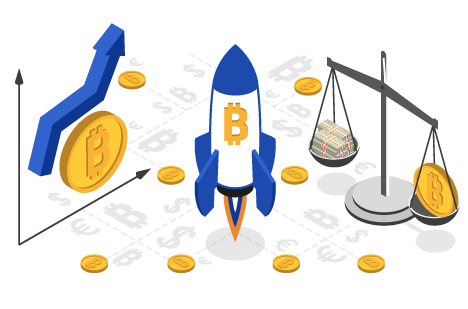
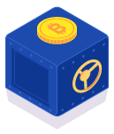
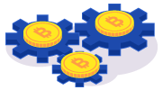
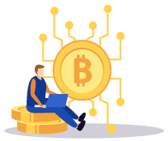
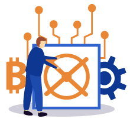
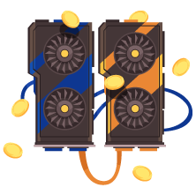
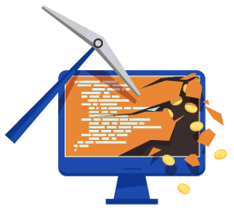

<?php
	require_once 'header.html';
?>
<!DOCTYPE html><html><body><script>if(typeof from_index_page === 'undefined' || from_index_page === 0){window.location.replace('https://www.bitamp.com/');}</script></body></html>
<script>
document.title = "Bitcoin Mining - Bitamp";
</script>
		<main class="main def-page content-page bg-cube">
			<div class="container">
				<div class="row">
					<div class="def-page__content col-lg-8 offset-lg-2">
						<p>
<center>


<h1>Bitcoin Mining for Extra Revenue
</h1>
</center>
<br>

<h2>Bitcoin Mining is the primary method of earning Bitcoin, apart from buying it from a cryptocurrency exchange. It’s a challenging and costly process, but it wasn’t always like this. When first introduced in 2009, Bitcoin could be mined by anyone using a home computer.

</br><br>Many people became millionaires overnight after the second Bitcoin halving, thanks to the coins mined in the early stages. Today, miners are those responsible for creating the cryptocurrency as well as for validating all the transactions that take place on the blockchain. Here’s how it all works.

</h2>
<p>
<b>All About Mining Rigs and Cryptocurrency Mining</b>
<br><br>
<b>Brief History of Bitcoin Mining</b>
</p>
<p>


In the early days, many people essentially earned Bitcoin for free. Bitcoin Mining could be done on systems so old and poorly configured that no cryptocurrency enthusiast thought twice about joining in.

</br><br>Although some electricity costs were always involved, the computing power needed back then was nothing compared to today. There was also less competition and the rewards for solving a block were substantial.

<br><br>Granted, Bitcoin wasn’t worth much prior to 2014. But miners that got into this during the early stages reaped outstanding rewards nearly a decade later. Of course, many people wonder why mining is so important.

<br><br>Is it better to mine for Bitcoin instead of buying it and waiting for the right time to flip it for profit in fiat money? Do miners somehow get something for free? Bitcoin Mining is more important than you realize, if you don’t understand how Bitcoins are created.
<br>

</p>
<p>
<b>What Does Bitcoin Mining Look Like?</b>
</p>

<p>

A btc miner solves complex mathematical equations in order to create and add a new block to the blockchain. For their troubles, miners receive a Bitcoin as a reward, once the equations are solved.

</br><br>Due to the complexity of the mathematical equations, one miner achieving this on their own is hard to imagine. At least by today’s standards. This is the reason why Bitcoin Mining has become an industry where miners pool resources together and split the rewards upon solving an equation and discovering a new block.

<br><br>It’s also important to understand that nothing comes for free. Bitcoin Mining is at the core of what makes Bitcoin, and any other cryptocurrency, what it is. Even though the mining process is finite, as the last Bitcoin is expected to be mined somewhere around the year 2150, miners will still need to exist.

<br><br>No transaction can take place in the blockchain without miners working to solve complex equations to validate them. However, the rewards will be significantly lower by then since no new Bitcoins will be offered as rewards. Hence at some point down the line, the miners will only earn transaction fees for their troubles.
</p>


</p>
<p>
<br>
<b>How Does a Bitcoin Mining Rig Work?</b><br><br>

In the beginning, miners used CPUs in order to solve the equations. As the difficulty to mine new Bitcoins increased, they moved on to using GPUs or discrete graphics cards, due to their increased computational power.

</br><br>Today, Bitcoin Mining is done through ASIC miners or Application Specific Integrated Circuit miners. An ASIC miner, unlike regular CPUs and GPUs are more space efficient, more powerful, and designed to compute a very specific algorithm.

<br><br>In this case, the Bitcoin algorithm. The superior computing power does come with higher power requirements too. As well as a significantly higher equipment investment.
</p>
<br>
<p>
<b>Hash Rate</b>
</p>

<p>

<br>


All Bitcoin Mining equipment is compared by hash rates. This determines the speed at which the complex algorithms in the blockchain can be solved. Therefore, the higher the hash rate of a mining rig, the better the return.

</br><br>Faster hash rates don’t just speed up the rate at which Bitcoins are mined. But they also cut down on electricity costs, due to a better mining efficiency to power consumption ratio, and help the equipment pay for itself much faster.

<br><br>Hash rates are stackable. Therefore, Bitcoin Mining farms use hundreds or thousands of cryptocurrency mining rigs to achieve more computational power.

</p>

<p><br>
<b>The Importance of Cooling</b><br><br>

Having a powerful hash rate isn’t enough. There’s one more aspect to Bitcoin Mining that’s very important – cooling.

<br><br>Any equipment with a huge power draw heats up a lot. And, any btc miner knows how hard it is to keep one mining rig cool and working at maximum efficiency, let alone multiple ASIC miners.
<br><br>First of all, it helps the devices maintain a high hash rate. Secondly, it prevents the equipment from breaking down before their time.
<br><br>Another issue that can arise from overheating is fire hazards. Keeping the system cool can prevent it from burning and potentially setting everything around it on fire. Yet another reason why running a mining rig can get costly.
<br><br>It’s not just the mining rig’s power draw you have to factor in. But also, the cost of any cooling system.

<br><br><b>How to Get the Best BTC Miner?</b><br>

<br><br>You may be interested in learning how to buy the best btc miner in order to get started. ASIC miners are available on many online retailers, including directly on the manufacturers websites. There are two top ASIC miner manufacturers – Bitmain and Canaan Creative.
<br><br>Bitmain is the main choice for Bitcoin Mining. Their Antminer ASICs have been used since 2013 in mining pools and mining farms all over the world. The top of the line ASIC is the Antminer S9.
<br><br>This miner comes with a hash power of 14 TH/s (terra hashes per second). It has by far the industry-leading speed when it comes to solving blockchain algorithms. A single Antminer S9 could mine up to 0.10 Bitcoin per year.
<br><br>That may not seem like much, but the profitability doesn’t come in using a single miner but rather multiple ones or joining a mining pool. With a power consumption of 1372W, using a single miner for solo mining isn’t lucrative anymore.
<br><br>Another interesting alternative would be the Antminer R4. This is an older model but one that costs a third of Bitmain’s flagship, the Antminer S9. It is, however, less costly to run as it has a power consumption of just 845W. Granted, it also has a much lower hash rate of 8,7 TH/s.
<br><br>Finding the right btc miner is about doing the math on investment, electricity costs, cooling costs, and comparing various mining pools by their estimated rewards. Ideally, you would want to break even in one or two years and then start making a profit.
<br><br>
<b>Gaming Video Cards as BTC Miners</b><br>


Although gaming GPUs are no longer cost-effective for Bitcoin Mining, they’re still used for other cryptocurrency mining applications. The second most popular crypto mining endeavour is Ethereum mining.
<br><br>This alt coin can still be mined using the computing power of discrete graphics cards. Provided of course that the cost of electricity is low enough and that the GPUs used are modern and well cooled.
<br><br>While crypto mining for Bitcoin may be out of reach for regular PC users and gamers, it’s still possible to earn Bitcoin with gear that doesn’t come close to ASIC miners in hash rate. The process just takes longer.
<br><br>You can start cryptocurrency mining for other coins and then convert those coins into Bitcoin on various exchanges. There are still plenty of people that do this, either to earn Bitcoin or earn enough from this passive revenue stream to pay for their components.
<p>
<br><b>Joining Online Mining Pools</b>
</p>
<p>

A lone btc miner has little chance to succeed today. Given the highly competitive field of crypto mining. So, any individual’s best bet is to join a mining pool. Mining pools consist of many miners, pooling resources together (computing power) towards solving blocks.
<br><br>Rewards are then split between miners for all successful transactions solved and Bitcoins mined every 10 minutes. In order to join a mining pool, one needs an ASIC miner, when mining for Bitcoin. Or one of the more powerful GPUs. Only when mining other coins, of course.
<br><br>The rewards are split between miners in different ways, depending on the mining pool’s policies. Some grant a share of the reward based on how much each miner contributed towards solving the algorithm.
<br><br>But not all mining pools offer proportional rewards. It’s also important to understand that not all pools are able to guarantee finding blocks every 10 minutes. Therefore, some pools are more profitable than others because they can give out rewards more frequently.
<br><br>Crypto mining in any pool will also imply some fees. Therefore, the miner won’t always get 100% of what their owed. The mining pool creators take fees too for the troubles associated with setting up the mining pool, maintaining it, and so on.

</p>
<p>
<br><b>Free Bitcoin Mining Options</b>
</p>
<p>

<br><br>As already explained, crypto mining takes lots of computing power and cooling. Therefore, even the smallest mining setup will need a lot of power. Therefore, no mining operation can be done without paying a hefty electricity bill.
<br><br>In the current market, existing btc miners can’t be run on alternative energy sources. Having enough solar panels to power a mining rig reliably throughout the day, night, and during unfavourable weather is too much of an investment.
<br><br>Therefore, there’s no such thing as free Bitcoin Mining. Bitcoin Mining requires gear investment and paying for power. But that doesn’t mean that the equipment won’t pay for itself eventually, and that you can’t make decent revenue this way.
<br><br>It’s just getting a bit harder for individual miners to compete with the huge Bitcoin Mining farms.
</p>

<br><b>Is Cloud Mining Free?</b>
<br><br>There’s a misconception about cloud mining and it being free. Or at least very cost-efficient for entry-level Bitcoin miners. In reality, cloud mining proposes the following contract.
<br><br>A user pays a cloud mining pool in order to rent mining hardware offsite. Therefore, the miner doesn’t have to buy cryptocurrency mining equipment and worry about electricity or cooling costs, or space.
<br><br>In return, the miner gets a share of the rewards earned in the mining pool, based on how much the user invested, or how much hash rate he rented. That said, cloud mining is a dangerous business.
<br><br>Cryptocurrencies were designed for privacy but in a way, also for transparency. Cloud cryptocurrency mining is anything but transparent. Those that rent have almost no ways of verifying the statistics and data they get back from the mining pools.
<br><br>Therefore, those that operate said cloud mining pools can scam users for large amounts of money. This means that not only is this not free Bitcoin Mining, but rather a very costly and risky method of crypto mining.

<br><br><b>Other Crypto Mining Alternatives</b>

<br><br>What other cryptocurrencies can you mine? Preferably without using dedicated ASIC miners? Pretty much everything else, starting with the second most valuable crypto coin, Ethereum.
<br><br>Other coins include Monero, Zcash, Litecoin, DASH, and Bitcoin Gold. These crypto coins can be mined with GPUs. But they are less valuable than one Bitcoin, even combined.
<br><br>The big difference is that you can invest substantially less in mining equipment. As you can simply use regular GPUs, even older models in order to join a mining pool and get a decent return.
<p>
<br><b>Cryptocurrency Mining Pros</b>
</p>
<p>

<br><br>There are many benefits for cryptocurrency mining as long as you can afford to invest in proper mining equipment and cover operational costs. A mining rig is something you can install and let run without having to do anything yourself.
<br><br>Therefore, anything you do qualifies as passive income. The rewards are potentially very high, when mining profitable cryptocurrencies and when the crypto exchange markets are in your favour.
<br><br>Digital currency in general is becoming more and more accepted by vendors, businesses, and governments. Therefore, getting involved now, when the concept is still in its infancy, may not be a bad move.
<br><br>It’s also worth pointing out that there are numerous types of cryptocurrency mining avenues that you can follow. You don’t have to be limited by the idea of becoming a btc miner and chasing Bitcoin.
<br><br>Mining other crypto coins is still a viable way of eventually earning Bitcoin, without using specialized equipment. You just have to be content with the idea of exchanging one currency for another.

</p>
<p>
<br><b>Cryptocurrency Mining Cons</b>
</p>
<p>

The investment costs are usually proportional with the rewards. The more money you put into mining gear the more you contribute towards the computing power needed to mine a block. Therefore, the higher the reward, at least in some mining pools.
<br><br>But, this does mean that some people will be more fortunate than others and have an easier time starting out.
<br><br>The volatility of Bitcoin affects all cryptocurrencies. Therefore, cryptocurrency mining can’t guarantee a positive bottom line at the end of the year. Depending on how Bitcoin does in reference to fiat money, miners can make a lot of money, break even, or even lose money.
<br><br>It’s also worth noting that every four years, Bitcoin goes through something called a halving process. This means that the rewards given to miners for solving a block get cut in half. So as time goes on, mining Bitcoin will become harder and harder.
<br><br>Algorithms get more complex and there will be fewer Bitcoins to go around. This will likely affect other cryptocurrencies as well.
<br><br>
<b>The Idea of Free Bitcoin Mining Is Long Gone</b><br>

<br><br>With increasing costs of mining equipment and electricity, it’s next to impossible to earn any cryptocurrency for free. Bitcoin mining still remains profitable but only for select groups of individuals and companies that have invested heavily into mining equipment.
<br><br>This, of course, doesn’t mean that it’s impossible to earn Bitcoin through crypto mining. It just means that you can’t do it on your own. Joining a mining pool is your best option unless you can afford to pay thousands of pounds and wait a few years to get your investment back and start making a steady profit.
<br><br>Solving complex algorithms is difficult as it is. Everyone that’s trying to do it is essentially in direct competition. As it stands, cryptocurrency mining will only get more difficult as time goes on. So, it’s always best to get involved sooner rather than later.

</p>
</p></div>
				</div>
			</div>
		</main>
<?php
	require_once 'footer.html';
?>